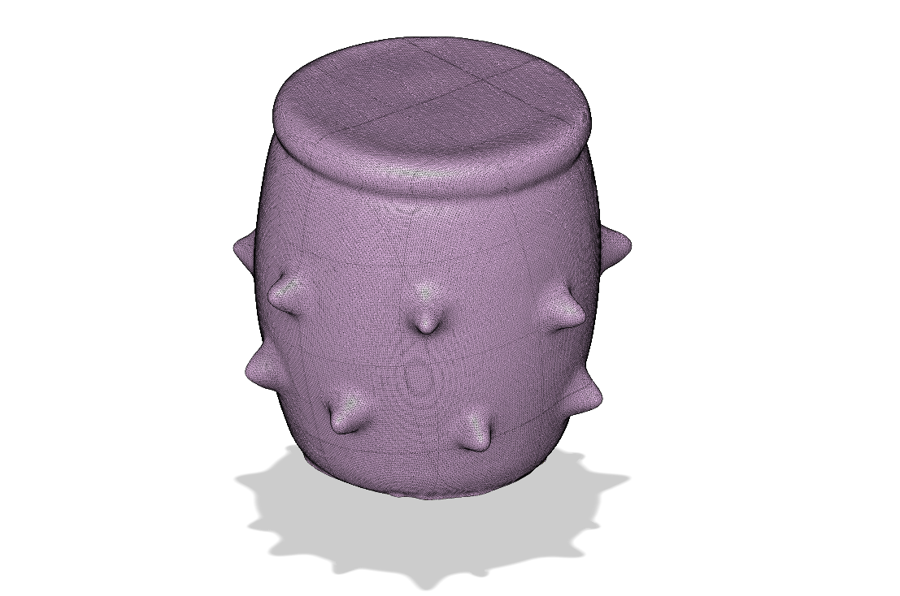
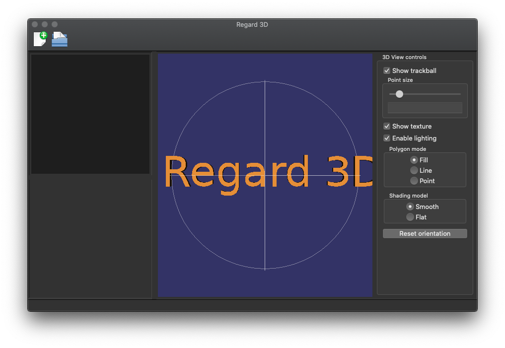
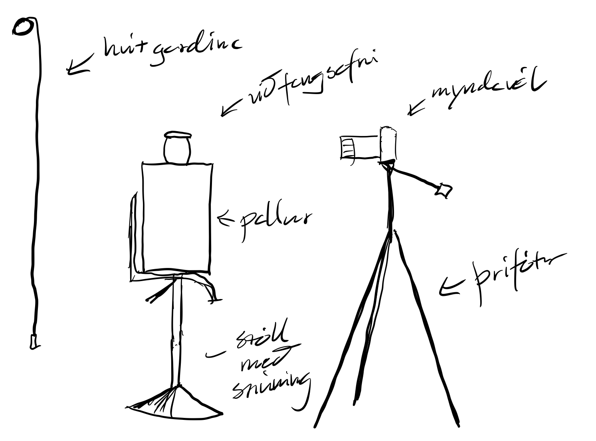
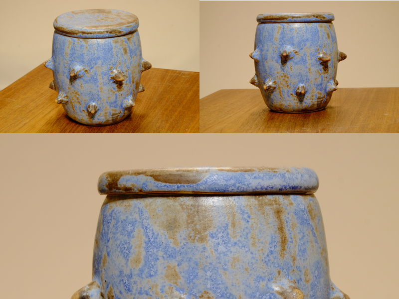

Verkefni 3: Líkanagerð með myndmælingafræði
Verkefni 3 í áfanganum Framleiðsluferli snýst annars vegar um að skanna einhvern hlut með myndmælingafræði, og hinsvegar að prenta hlut með þrívíddarprentun sem ekki væri hægt að framleiða með hefðbundnum aðferðum. Í þessari uppskrift verður farið yfir myndmælingahlutann frá ljósmyndun og mælingum með Regard3D að meðhöndlun tilbúins módels í Fusion360. Uppskriftin af þrívíddarprentuninni verður birt síðar á sér síðu.
Myndmælingafræði (e. Photogrammetry) í grófum dráttum
Myndmælingafræði er víðtæk fræði sem byggir á því að lesa upplýsingar úr ljósmyndum. Í grunnin á hún rætur sínar að rekja aftur fyrir aldamótin 1900 en sú grein hennar sem við fjöllum um í þessari uppskrift, tölvulíkanagerðin, er auðvitað talsvert yngri. Í dag er myndmælingafræði mikið notuð í til dæmis við hönnun tölvuleikja, varðveislu minja og kortagerð. Með tilkomu gjaldfrjáls hugbúnaðar á borð við Regard 3d hefur þröskuldurinn fyrir almenning að nýta sér fræðina nánast verið þurkaður út og vinsældir hennar því stóraukist.
Val á hugbúnaði
Í undirbúiningsferli þessa verkefnis lagðist ég í að kynna mér framboð á gjaldfrjálsum myndmælingarhugbúnaði og komst þá fljótt að því að það er mikið og um margt að velja. Hugbúnaðurin skiptist þó eiginlega í tvær greinar, annars vegar myndmælingarreikniritin sjálf og hinsvegar ýmis viðmót sem byggja þó oft á sömu reikniritunum. Ég valdi að nota Regard3D sem er gjaldfrjáls hugbúnaður þróaður af svissneskum hugbúnaðarverkfræðingi. Hugbúnaðurinn er raunar viðmót sem sameinar nokkur af þessum myndgreiningarreikniritum undir eitt þak og auðveldar þannig allt vinnuflæðið. Eins og sést er viðmótið einfallt og alls ekki yfirþyrmandi.  Uppsetning Regard3D hefst með því að sækja og setja upp nýjustu útgáfu hugbúnaðarins af heimasíðu hans regard3d.org. Ferlið er einfallt og vel útskýrt á heimasíðunni.
Myndataka
Undirstöðuatriði í því að fá góðar niðurstöður úr myndmælingunum er að grunngögnin séu góð, þ.e. að myndirnar séu skýrar, lausar við glampa og í hárri upplausn. Myndatökuferlið getur verið mismunandi eftir umhverfi og stærð hlutarins sem á að mæla en þessi undirstöðuatriði gilda alltaf. Ég valdi að mæla lítinn leir vasa vegna áferðarinnar sem var mjög breytileg og einnig stærðarinnar sem gerði mér kleift að nota snúningsfót til að snúa hlutnum milli mynda en ekki myndavélinni. Það gleymdist að taka myndir af uppstillingunni en þessi mynd gefur vonandi einhverja hugmynd um hvernig þetta leit út.
Mikilvægt er að ná myndum af öllum flötum hlutarins og er ágætis þumalputtaregla að mynda alla fleti frá a.m.k. þrem sjónarhornum. Þegar uppi var staðið tók ég tæplega 200 myndir af hlutnum sem er yfirdrifið nóg fyrir þessa frekar einföldu geómetríu. Fjölgun mynda hefur á einhverjum tímapunkti hverfandi áhrif á gæði niðursaða og mikill fjöldi mynda hægir verulega á útreikningum í hugbúnaðinum. Að því sögðu ákvað ég að prufa að nota allar 200 myndirnar til að fá einhverja hugmynd um tímann sem tæki að vinna svo stórt gagnasafn. Þetta eru dæmi um myndirnar sem ég notaði:
Vinna í Regard3D
Þegar myndasafnið er tilbúið er fyrst að flytja það inn í hugbúnaðinn. Nú vil ég aftur vísa í þær frábæru leiðbeiningar sem er að finna á heimasíðu Regard3d sem ég fylgdi sjálfur og einnig benda á tilbúinu myndasöfnin í leiðbeiningunum sem er gott að prufa sig áfram með. Þegar myndasafnið er komið inn er best að vista verkefnið áður en lengra er haldið. Skrefin í forritinu eru síðan eftirfarandi: